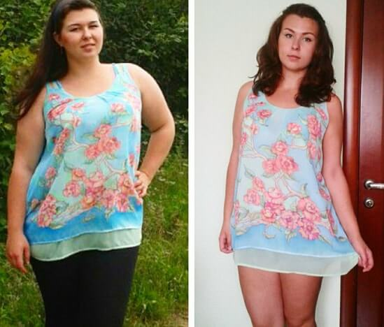

ISTORIA SLĂBIRII
Andreea Raicu a slăbit cu 14 kg în doar o lună și a povestit studioului emisiunii "Se zice că..." cum i-a reușit!
Ioana Voicu: București. talk-show "Se zice că...". În acest studiou vom discuta istorii neinventate despre care este imposibil de tăcut.
Cu înălțimea ei, Andreea cântărea puțin peste 75 kg, dar în mod neașteptat pentru toată lumea, literalmente a început să piardă în greutate repede.
Timp de o lună, Andreea a scăzut aproape cu 14 kg! Și până acum păstrează tăcerea, ascunzând literalmente calea sa secretă. Dar cum i-a reușit să dezvăluie secretul pierderii ei minunate, cântăreața a fost de acord doar în studioul emisiunii " Se zice că..." și aceasta este tema principală a programului nostru de astăzi!
Ioana Voicu: Andreea, salut, arătați excelent! Despre slăbirea dvs. minunată circulă deja legende. De scăpat 14 kg timp de o lună este într-adevăr foarte mult. Cum ați reușit?
Andreea: Bună! Niciodată nu m-am îngrijorat de greutatea mea, dar în ultima vreme am câștigat kilograme în plus. Ceva timp am crezut că excesul de greutate la vârsta mea - este un nonsens. Dar a început să meargă prea departe. Deși practicarea sportului este foarte dificilă, iar cu vârsta ajută mai puțin, iar dieta nu este o opțiune datorită programului meu ocupat.
Ioana Voicu: Confirm! Și aspectul dvs. actual este pur și simplu incredibil! Este adevărat că puteți pierde în greutate cu 14 kilograme fără diete și exerciții extenuante?
Andreea: Mulțumesc pentru compliment. Și este într-adevăr adevărat, am slăbit fără diete, antrenamente și chimie periculoasă.
Ioana Voicu: Ce a fost, un fel de dietă nouă sau chirurgie plastică? Spuneți-ne, ce s-a întâmplat în continuare? Andreea, acum sunteți o altă persoană.
Andreea: Sala de gimnastică a fost greu pentru mine. Cu dietele relația, de asemenea, nu s-a legat, nu înțelegeam niciodată modul în care oamenii se pot tortura astfel. O jumătate de grăunte pe zi? Nu sunt o thumbelină! Și ce rămâne? Când mâinile mele au început să cadă, prietena mea m-a sprijinit. Văzând în ce stare sunt, mi-a sfătuit să încerc o altă opțiune - soluția Keto Diet. Bea doar o porție cu ceai, suc sau apă de 3 ori pe zi și nu te gândi la nimic, vom vedea rezultatul. Credeam că glumește, a decis să mă învioreze, dar a insistat și am decis să o încerc.
Ioana Voicu: Ce s-a întâmplat în continuare? Acest Keto Diet a condus la rezultate uimitoare?
Andreea: Da, anume Keto Diet, accelerează metabolismul în organism. După o săptămână de "experiment", m-am simțit într-adevăr mai bine, a apărut o ușurință în organism. Nu am schimbat nimic în nutriție, am mâncat absolut aceleași alimente, dar am slăbit. Mi s-a părut că a fost nevoie de 1,5-2 kg, dar când am stat pe cântar, am fost uimită - MINUS 4 kg! Cum așa? Astfel de efect de trei mese pe zi? Am început să citesc ambalajul, doar ingrediente naturale în compoziție și m-am liniștit.
După a doua săptămână, așteptam deja repetarea miracolului. Binelui te obișnuiești repede iar rezultatului mai puțin de 4 kg, deja nu am fost de acord. Am aruncat 6 kg! Aproape 1 kg pe zi, ce cum vouă? Personal, aripi mi-au crescut în spate. Rezultatele celei de-a doua și a treia săptămâni sunt minus 6 și respectiv 5 kg. Am băut Keto Diet o lună și am slăbit cu 14 kg fără nici-un efort, dietă și antrenament!
Ioana Voicu: Sună minunat! Cred că ați devenit mai tânără, arătați grozav!
Andreea: Vă mulțumesc, acum adesea îmi spun aceasta. Mai mult de 75 kg înainte și acum 61 kg este o diferență uriașă! Interesant, deoarece din momentul când am slăbit a trecut mai mult de 6 luni, Keto Diet nu mai beau, iar greutatea nu se întoarce. Este un rezultat cu adevărat de încredere, deși păstrez câteva pachete la domiciliu, pentru orice caz.
Ioana Voicu: Și cum ați cumpărat Keto Diet Unde se vinde?
Andreea: El se vinde atât în România, cât și în străinătate, în special în Bulgaria. Am comandat pe site-ul oficial al furnizorului, pe care îl sfătuiesc la toată lumea. Livrarea este rapidă, calitatea este garantată și nu există riscul de a te împiedica de un surogat, și cel mai important - nu este plată în avans. Numai furnizor oficial nu are nevoie de plată în avans.
Andreea: Vreau să adaug că nu trebuie să amânați slăbirea, pentru că singuri nu veți observa cum într-un an se vor adăuga încă zece kilograme și va fi prea târziu să faceți ceva. De asemenea, cine va încerca să slăbească cu ajutorul Keto Diet - publicați pe site feedback-ul dvs. și fotografia cu rezultatele.
Atenție!
Cazurile de vânzare a preparatului contrafăcut Keto Diet au devenit mai frecvente, care nu are proprietăți de vindecare! De aceea, noi, în special, pentru spectatorii și cititorii noștri, plasăm un link pentru a comanda soluția Keto Diet de la singurul furnizor oficial. Numai în acest caz sunteți garantat să obțineți un produs de calitate la cel mai bun preț!
Acum în România are loc promoția "Keto Diet pentru 159 RON"
Promoția în România are loc în timpul săptămânii de la până
inclusiv! Pentru a completa cererea este suficient să introduceți numele și numărul dvs. de telefon pentru comunicare pe site-ul oficial al produsului Keto Diet și să așteptați apelul gratuit pentru confirmarea cererii.
Atenție vă rog! Pe teritoriul României pe tot parcursul programului, preparatul Keto Diet va fi realizat la un preț de 159 RON, cu plata doar după primire! Fiți atenți!
Până la sfârșitul programului pe teritoriul României au rămas:

Am fost surprinsă că scrieți că numai nutriționiști știu despre Keto Diet. Îl beau în mod regulat. Inițial, el m-a ajutat să pierd mai mult de 20 kg. Iar acum, doar pentru prevenire, bine, și vitamina, este un produs complet natural. Prietenii mei, apropo, de asemenea, știu despre el de mult timp, asa că nu este vorba doar de secretul dvs.)) FOTOGRAFIE ÎNAINTE ȘI DUPĂ
Pentru mine, Keto Diet a devenit o adevărată mântuire. Acum câțiva ani am avut un accident, după care 8 luni nu mă puteam mișca. În timp ce eram în pat am adunat 26 kg! Treptat am început să merg cu baston, însă despre nici-un exercițiu fizic nu putea fi vorba, pentru că eram încă slabă iar greutatea înrăutățea întreaga situație. Prima dată prietena mea a încercat să-mi dea aceste capsule, tocmai s-a întors din SUA, acolo ea le-a încercat și a luat mai multe cu ea. Mi-a dat 2 cutii. Desigur, nu m-am așteptat la nimic, am decis să încerc. Le-am băut de 3 ori pe zi. Am observat primele schimbări peste o săptămână, și nu că am slăbit foarte tare, am avut sentimentul că corpul a devenit într-o oarecare măsură mai rapid, fie că digerează mâncarea etc. Simțeam fizic modalitatea în care metabolismul se accelerează. În primele 2 săptămâni am scăzut cu 4 kg fără a schimba nimic în modul meu! Restul de 26 kg au plecat aproximativ peste 3 luni. Cine va spune că 3 luni este prea lung, încercați cel puțin ceva să aruncați în aceeași sală de fitness! Sunt foarte bucuroasă, cred ca am fost norocoasă că prietena mea a aflat despre Keto Diet, altfel nu știu ce ar fi cu mine, până acum aș fi avut greutatea de 89 kg.
Am început să beau, am mâncat tot ce-mi plăcea, și simultan am slăbit cu 9 kg. Cred că Keto Diet pentru slăbire este cel mai bun dintre lucrurile pe care le-am întâlnit și că cel mai splendid lucru nu este necesar să te ruinezi în sala de gimnastică, nu e timp pentru aceasta și dorință. O astfel de soluție pentru oameni ca mine este doar perfectă! Vă recomand! Iată rezultatele mele. Vă mulțumesc pentru sfat!

Fiți sănătoși! Sunt foarte bucuroasă pentru tine, sper că acest lucru va schimba viața multora!
Voi încerca cu siguranță și voi raporta rezultatele. În acest an intru la universitate. Vreau să încep o viață nouă cu o figură nouă. La școală, am tolerat hărțuirea băieților, mă considerau grasă. Vreau să pierd 10 kilograme și să găsesc un tip vrednic la universitate.
Am făcut comandă la curs. Am primit peste 4 zile. Am început să încerce să slăbesc. Mai târziu, voi scrie rezultatele. Mulțumesc!
Sunt deja cu Keto Diet a treia zi și vreau să spun, rezultatul este pe față, mă simt mai ușor, tenul este excelent, senzația de foame nu este simțită deloc, cântarul arată rezultate bune. Vă sfătuiesc. la sfârșit, voi raporta. Keto Diet este foarte eficient!
Mulțumesc pentru sfat. Nu pot scăpa de kilogramele mele. Centrele comerciale de dietologie sunt foarte scumpe, în clinică nu pot oferi nimic deloc. Iar soluțiile populare și dieta totul am încercat. Aștept livrarea acum!
Oh, nu m-am simțit atât de bine de trei ani! Nici măcar nu vă puteți imagina ce fel de fericire este - pur și simplu de luat și de mâncat prăjitură) Am băut complexul o jumătate de lună doar.
Interesant, asupra bărbaților de asemenea acționează? Aș dori să pierd kilograme în plus către sezonul cald. Încă nu am înțeles destul, trebuie de plătit ceva în avans?
Bineînțeles, comandați! Multor a ajutat deja! Sincer, sfătuiesc! După cum ați observat deja în mod corect, nu trebuie să plătiți nimic în avans, decât după primirea coletei personal în mâini la poștă sau de la curierul companiei de transport.
Greu de crezut ... dar atât de mulți oameni spun că funcționează, ar trebui să funcționeze
M-am dus pe site pentru a citi mai multe despre complexul Keto Diet, și este o surpriză foarte plăcută, prețul este de 159 RON, probabil în onoarea sezonului de slăbire, acum este vară) Nu am putut rezista și am cumpărat în general)))
Acum este clar de ce vedetele sunt atât de slabe, probabil că mănâncă acest Keto Diet pe tot parcursul anului. Este bine că au inventat acest complex și sunt gustoase și utile.
Am 47 de ani, în mine 92 kg. Am încercat diferite diete, dar întotdeauna mă scăpam. Și acum trei luni în urmă după următoarea dietă cu conținut scăzut de carbohidrați am suferit. Timp de 3 săptămâni m-am umflat încă cu încă 7 kg! Este un coșmar. Voi încerca acest complex.
Încerc să slăbesc deja demult anul trecut, mi-au prescris sesiuni de acupunctură, am pus ace la baza degetelor mari - nici-un rezultat. Voi încerca cu siguranță acest complex!
Cu ce fel de nebunii oamenii numai nu se ocupă, iată spuneți-mi cum poate acupunctura să mă ajute? Mi-a sfătuit anul trecut un nutriționist acest complex. Problemele cu greutatea au început încă la 39, acum am 43 ani, iar greutatea este aproape normală. Și am observat că am început mult mai bine să dorm și nu am dureri de cap, care m-au torturat constant. Apropo, am comandat de pe același site.
Din nou, repet că preparatul Keto Diet ar trebui să fie comandat numai pe site-ul oficial. Feriți-vă, vă rog, de falsuri.